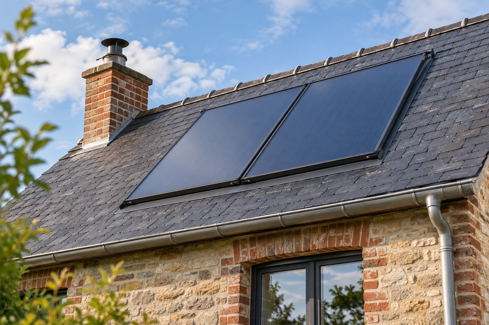

02L’ÉNERGIE DU SOLEIL
Le solaire pour votre habitat
Nous proposons le chauffage solaire et le chauffe-eau solaire. La configuration du bâtiment et vos besoins doivent être examinés avant de choisir un équipement ; nous vous invitons à présenter votre installation actuelle pour préparer une étude personnalisée de votre projet.
Parler de mon projet solaire